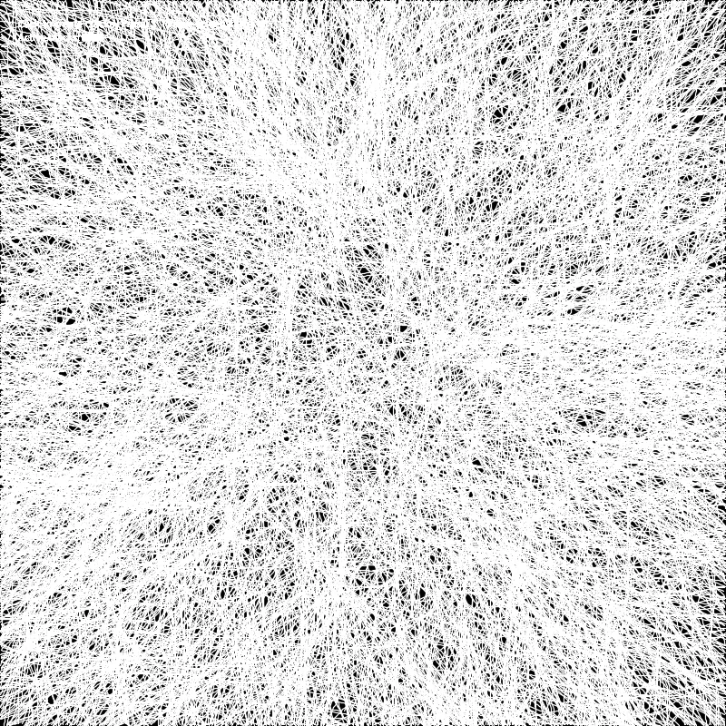
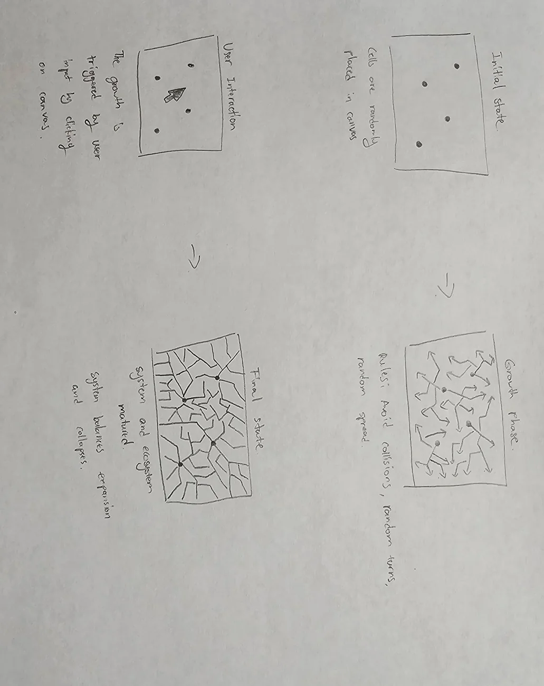

DES 111 · SPRING 2025 · FINAL PROJECT · PROCESSING / CREATIVE CODING
Cracked Glass — Generative Interaction
The beauty of tension, fracture, and rules that produce unpredictable results.

01 / OVERVIEW
Concept & approach
A generative interactive sketch where clicking an 800 × 800 canvas initiates multiple fracture lines that grow, turn, and sometimes branch under procedural rules.
Inspired by the generative-art methods described in the final statement, especially Jared Tarbell’s Substrate. The artist statement highlights control versus randomness and identifies collision-aware fractures and audio feedback as ideas for future development—not implemented features.
02 / SELECTED OUTPUTS
From the original coursework


03 / TOOLS & SOURCE
Built with Processing
Processing (.pde) · mouse-triggered cracks · recursive-style branching · screenshot export with S
Original .pde source files are provided for inspection. Opening the files in Processing may require a compatible Processing installation.
PRESENTATION